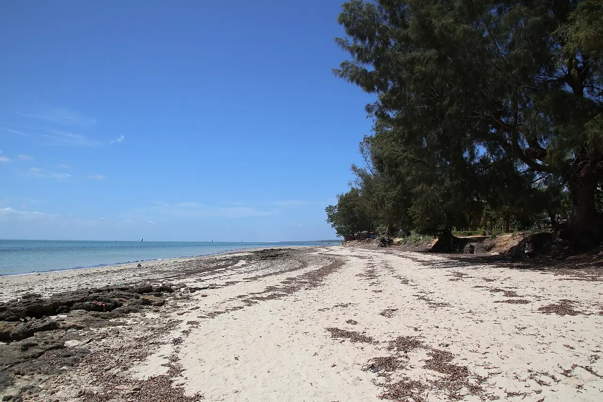

Vilankulo
Inhambane, Mozambique · kitesurf, baignade

Longue plage de sable face à l’archipel de Bazaruto, où la marée découvre de vastes bancs et lagons peu profonds. Le vent y souffle régulièrement une bonne partie de l’année, ce qui en fait un spot de kitesurf réputé du Mozambique.
- Lieu
- Inhambane, Mozambique
- Niveau
- Intermédiaire
- Activités
- kitesurf, baignade
- Type d'eau
- Mer / océan
- Coordonnées
- -21.99, 35.32 (position approximative du secteur)
Dangers à connaître
- Fort marnage : zones qui se vident à marée basse et courants dans les chenaux.
- Nombreux bateaux et boutres près du rivage.
Le conseil d'Ocean Buddy
Consulte les horaires de marée : à marée basse, l’eau se retire très loin et découvre des bancs de sable.
Ouvrir dans Ocean Buddy Télécharger sur l'App Store
Source : Fiche Ocean Buddy · septembre 2026 · à vérifier localement.